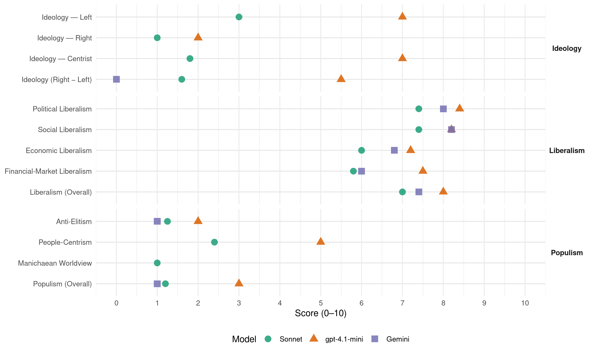

PS (Portugal, 2022)
manifesto_id 35311_202201
Get full text: This site shows derived annotations and short verbatim quotes only. The full manifesto text is © Manifesto Project / WZB — obtain it via manifesto-project.wzb.eu using the manifesto_id above.
Headline scores
| Dimension | Sonnet | gpt-4.1-mini | Gemini |
|---|---|---|---|
| Populism (Overall) | 1.2 | 3.0 | 1.0 |
| Anti-Elitism | 1.2 | 2.0 | 1.0 |
| People-Centrism | 2.4 | 5.0 | – |
| Manichaean Worldview | 1.0 | – | – |
| Ideology (Right − Left) | 1.6 | 5.5 | 0.0 |
| Liberalism (Overall) | 7.0 | 8.0 | 7.4 |
| Political Liberalism | 7.4 | 8.4 | 8.0 |
| Social Liberalism | 7.4 | 8.2 | 8.2 |
| Economic Liberalism | 6.0 | 7.2 | 6.8 |
| Financial-Market Liberalism | 5.8 | 7.5 | 6.0 |
Evidence per dimension
Economic Liberalism
Gemini · score 7.0 · verified · chunk 1
“estímulo ao investimento, à inovação e ao empreendedorismo”
A política fiscal também deve promover o crescimento, através do estímulo ao investimento, à inovação e ao empreendedorismo, ao surgimento
Gemini · score 7.0 · verified · chunk 2
“aberta ao Mundo, ao comércio”
mantendo a Europa como uma entidade aberta ao Mundo, ao comércio internacional e às agendas
Gemini · score 6.0 · verified · chunk 3
“atrair investimento privado para o setor florestal”
enquanto força de prevenção e defesa… Atrair investimento privado para o setor florestal, promovendo a criação de Fundos de
Gemini · score 7.0 · verified · chunk 4
“fiscalidade que favoreça o investimento e a capitalização”
precisamos de uma fiscalidade que favoreça o investimento e a capitalização das empresas, instituições financeiras públicas que compensem
Gemini · score 7.0 · verified · chunk 5
“garantir a proteção dos consumidores e a sã e leal concorrência”
alargamento do seu mapa de pessoal, no sentido de garantir a proteção dos consumidores e a sã e leal concorrência, e atendendo aos desafios e oportunidades da transição
gpt-4.1-mini · score 8.0 · verified · chunk 1
“crescimento económico baseado em investimento público e privado”
Os próximos anos deverão ser marcados por um importante crescimento económico, baseado em investimento público e privado e com o apoio do Programa de Recuperação e Resiliência (PRR).
gpt-4.1-mini · score 8.0 · verified · chunk 2
“promover a internacionalização da economia portuguesa”
Aumentar a presença do português como língua curricular do ensino básico e secundário, através de projetos de cooperação com países de todos os continentes; Consolidar a presença do português e dos estudos portugueses em instituições de ensino superior, na Europa, Américas, África, Ásia e Oceania, e alargar a rede das cátedras de ensino e investigação em estudos portugueses; I.IV. 1.8. Apoiar a internacionalização da economia portuguesa, na tripla dimensão de fomento das exportações, fomento do investimento no exterior e atração de investimento direto estrangeiro:
gpt-4.1-mini · score 7.0 · verified · chunk 3
“promovendo a economia azul circular, promovendo modelos de negócio”
…Desenvolver uma economia azul circular, promovendo modelos de negócio baseados na recolha de lixo marinho e na sua valorização industrial-comercial; Prosseguir a aposta nas energias renováveis oceânicas…
gpt-4.1-mini · score 7.0 · verified · chunk 4
“promovendo uma fiscalidade que incentive o investimento na modernização produtiva”
…Continuar a promover uma fiscalidade que incentive o investimento na modernização produtiva, incentivando o investimento privado em I&D empresarial e reforçando a atratividade internacional de Portugal, designadamente através do regime da Patent Box e do robustecimento do SIFIDE…
gpt-4.1-mini · score 6.0 · verified · chunk 5
“duplicando a oferta pública atual a preços regulados”
Concretizar o reforço do financiamento do Plano Nacional de Alojamento para o Ensino Superior, garantindo a construção e reabilitação de 15 mil camas até 2026, duplicando a oferta pública atual a preços regulados, previsto no PRR; Potenciar a capacidade de qualificação dos portugueses, através de um novo “Contrato de Legislatura 2022-2026”, para além do lançamento dos Programas Impulso Jovem STEAM e Impulso Adultos através do PRR.
Sonnet · score 6.0 · verified · chunk 1
“estímulo ao investimento, à inovação e ao empreendedorismo”
A política fiscal também deve promover o crescimento, através do estímulo ao investimento, à inovação e ao empreendedorismo, ao surgimento e desenvolvimento das startups
Sonnet · score 6.0 · verified · chunk 2
“internacionalização da economia portuguesa”
Apoiar a internacionalização da economia portuguesa, na tripla dimensão de fomento das exportações
Sonnet · score 6.0 · mixed · chunk 3
“total liberalização do mercado de arrendamento urbano”
É também evidente que a total liberalização do mercado de arrendamento urbano efetuada em 2012 não conseguiu incentivar o aumento do arrendamento em geral, muito menos uma oferta de habitação a preços acessíveis
Sonnet · score 6.0 · verified · chunk 4
“economia aberta, em que o Estado apoia”
uma economia aberta, em que o Estado apoia o processo de internacionalização das empresas e a modernização da sua estrutura produtiva
Sonnet · score 6.0 · verified · chunk 5
“sã e leal concorrência”
no sentido de garantir a proteção dos consumidores e a sã e leal concorrência, e atendendo aos desafios e oportunidades da transição digital
Financial-Market Liberalism
Gemini · score 7.0 · verified · chunk 2
“regras orçamentais que combinem”
governação da Zona Euro, assegurando regras orçamentais que combinem disciplina financeira e crescimento
Gemini · score 6.0 · verified · chunk 3
“tributação dos movimentos de capitais, das transações financeiras”
combate aos “paraísos fiscais”; Defender, no plano europeu, a tributação dos movimentos de capitais, das transações financeiras e da economia digital, bem como o
Gemini · score 6.0 · verified · chunk 4
“redução da sua dependência do financiamento do sistema bancário”
diversificação das fontes de financiamento das empresas e na redução da sua dependência do financiamento do sistema bancário; Prosseguir
Gemini · score 5.0 · verified · chunk 5
“Avaliar o quadro regulatório das comissões bancárias”
casos de sobreendividamento; Avaliar o quadro regulatório das comissões bancárias, assegurando os princípios da transparência ao consumidor
gpt-4.1-mini · score 8.0 · verified · chunk 1
“Portugal financiou-se com taxas de juro historicamente baixas”
Com efeito, durante a pandemia, a República financiou-se com taxas de juro historicamente baixas e pela primeira vez emitiu dívida pública com maturidade de 10 anos a taxas de juro negativas.
gpt-4.1-mini · score 7.0 · verified · chunk 4
“robustecendo o Banco Português de Fomento”
…divulgando a oferta de instrumentos financeiros oferecidos pelas instituições financeiras de apoio à economia, racionalizando a atuação destas mesmas e robustecendo o Banco Português de Fomento, no seu papel de national promotional bank, continuando a apostar na diversificação das fontes de financiamento das empresas e na redução da sua dependência do financiamento do sistema bancário;…
Sonnet · score 6.0 · verified · chunk 1
“sistema financeiro, da construção”
Responsabilizar as entidades reguladoras…promovendo boas práticas em setores como o sistema financeiro, da construção, o desportivo e dos serviços públicos essenciais
Sonnet · score 6.0 · verified · chunk 2
“emissão de obrigações verdes”
Promover a emissão de obrigações verdes, fomentando o desenvolvimento de plataformas de microcrédito orientado para o investimento em soluções de baixo carbono
Sonnet · score 5.0 · verified · chunk 3
“tributação dos movimentos de capitais, das transações financeiras”
Defender, no plano europeu, a tributação dos movimentos de capitais, das transações financeiras e da economia digital, bem como o desenvolvimento de incentivos fiscais para a inovação e o desenvolvimento sustentável
Sonnet · score 6.0 · verified · chunk 4
“diversificação das fontes de financiamento das empresas”
continuando a apostar na diversificação das fontes de financiamento das empresas e na redução da sua dependência do financiamento do sistema bancário
Sonnet · score 6.0 · verified · chunk 5
“transparência ao consumidor e da proporcionalidade”
Avaliar o quadro regulatório das comissões bancárias, assegurando os princípios da transparência ao consumidor e da proporcionalidade face aos serviços efetivamente prestados
Political Liberalism
Gemini · score 8.0 · verified · chunk 1
“Melhorar a qualidade da democracia”
I.III. Melhorar a qualidade da democracia 26 I.III.1. Promover
Gemini · score 9.0 · verified · chunk 2
“defesa do Estado de Direito”
desafios com que a Europa está confrontada, designadamente quanto às migrações, às alterações climáticas e à transição para uma economia digital, mas também na defesa do Estado de Direito e na luta contra os populismos
Gemini · score 8.0 · verified · chunk 3
“garantia do direito fundamental de acesso à Justiça”
ancoragem na negociação coletiva e com garantia do direito fundamental de acesso à Justiça; Clarificar na lei as condições de exercício
Gemini · score 7.0 · verified · chunk 4
“descentralização das competências para os municípios”
necessários, no âmbito da descentralização das competências para os municípios na área da ação social, a fim de garantir
Gemini · score 8.0 · verified · chunk 5
“contributo para a democracia no contexto nacional”
formação jornalística, reconhecendo o seu contributo para a democracia no contexto nacional e local; Promover a revisão da Lei de Imprensa
gpt-4.1-mini · score 9.0 · verified · chunk 1
“Garantir a liberdade de acesso à profissão”
I.III.2. Garantir a liberdade de acesso à profissão A liberdade de escolha e acesso à profissão é um direito fundamental constitucionalmente garantido e o Estado tem obrigação de o assegurar, evitando restrições desproporcionadas que impeçam o seu exercício.
gpt-4.1-mini · score 9.0 · verified · chunk 2
“sinónimo de democracia, de cumprimento do princípio da subsidiariedade”
respeita às autonomias regionais dos Açores e da Madeira, manter o nosso país na vanguarda de uma descentralização política, que é, em si mesma, sinónimo de democracia, de cumprimento do princípio da subsidiariedade e de boa governação. I.III.4.1. Reforçar o papel das regiões autónomas no exercício de funções próprias e do Estado
gpt-4.1-mini · score 8.0 · verified · chunk 3
“garantindo a universalização do ensino pré-escolar”
…alargando a rede de creches e concretizando a universalização do ensino pré-escolar, Melhorar a conciliação entre trabalho, vida pessoal e familiar…
gpt-4.1-mini · score 8.0 · verified · chunk 4
“disponibilizar um Portal Único de Serviços Digitais”
…Pretende-se simplificar e agilizar as interações com os cidadãos e empresas. Para este efeito, e porque o livre acesso à informação é essencial para o a tomada de decisão, o PS compromete-se a: Disponibilizar um Portal Único de Serviços Digitais, que permita aos cidadãos e às empresas aceder, de forma simples, digital e desmaterializada, aos principais serviços prestados pela Administração Pública;…
gpt-4.1-mini · score 8.0 · verified · chunk 5
“Promover a revisão da Lei de Imprensa, ajustando-a aos desafios da era digital”
Promover a revisão da Lei de Imprensa, ajustando-a aos desafios da era digital e às novas realidades mediáticas, enquanto pilar da liberdade de imprensa. Garantir o funcionamento e financiamento adequado do serviço público de rádio e televisão no desenvolvimento da sua atividade, enquanto ferramenta e plataforma global de comunicação de referência, que ocupa um lugar insubstituível na sociedade portuguesa, assegurando a prestação de uma informação continuada, isenta, equilibrada e plural, e promovendo o desenvolvimento da literacia mediática, no quadro da revisão do contrato de concessão do serviço público de rádio e televisão.
Sonnet · score 8.0 · verified · chunk 1
“melhorando a qualidade da democracia”
Prosseguir este caminho, melhorando a qualidade da democracia, promovendo a participação dos cidadãos, renovando e qualificando a classe política
Sonnet · score 8.0 · verified · chunk 2
“princípio da separação de poderes e a independência do poder judicial”
Sem nunca pôr em causa o princípio da separação de poderes e a independência do poder judicial, que constituem verdadeiras traves-mestras do nosso Estado de Direito Democrático
Sonnet · score 7.0 · verified · chunk 3
“direito fundamental de acesso à Justiça”
Trabalhar, em diálogo com os parceiros sociais, em modelos de resolução alternativa de litígios dos conflitos laborais, na dimensão coletiva e individual, partindo da boa experiência dos árbitros já existentes no Conselho Económico e Social, com ancoragem na negociação coletiva e com garantia do direito fundamental de acesso à Justiça
Sonnet · score 7.0 · verified · chunk 4
“livre acesso à informação é essencial”
porque o livre acesso à informação é essencial para a tomada de decisão, o PS compromete-se a: Disponibilizar um Portal Único de Serviços Digitais
Sonnet · score 7.0 · verified · chunk 5
“seu contributo para a democracia no contexto nacional”
reconhecendo o seu contributo para a democracia no contexto nacional e local; Promover a revisão da Lei de Imprensa
Liberalism (Overall)
Gemini · score 8.0 · verified · chunk 1
“Melhorar a qualidade da democracia”
I.III. Melhorar a qualidade da democracia 26 I.III.1. Promover
Gemini · score 8.0 · verified · chunk 2
“defesa do Estado de Direito”
desafios com que a Europa está confrontada, designadamente quanto às migrações, às alterações climáticas e à transição para uma economia digital, mas também na defesa do Estado de Direito e na luta contra os populismos
Gemini · score 7.0 · verified · chunk 3
“combate ao racismo e a todas as formas de discriminação”
I. III. MIGRAÇÕES Portugal precisa do… O combate ao racismo e a todas as formas de discriminação é um compromisso de sempre do Partido
Gemini · score 7.0 · verified · chunk 4
“fiscalidade que favoreça o investimento e a capitalização”
precisamos de uma fiscalidade que favoreça o investimento e a capitalização das empresas, instituições financeiras públicas que compensem
Gemini · score 7.0 · verified · chunk 5
“garantir a proteção dos consumidores e a sã e leal concorrência”
alargamento do seu mapa de pessoal, no sentido de garantir a proteção dos consumidores e a sã e leal concorrência, e atendendo aos desafios e oportunidades da transição
gpt-4.1-mini · score 9.0 · verified · chunk 1
“Garantir a liberdade de acesso à profissão”
I.III.2. Garantir a liberdade de acesso à profissão A liberdade de escolha e acesso à profissão é um direito fundamental constitucionalmente garantido e o Estado tem obrigação de o assegurar, evitando restrições desproporcionadas que impeçam o seu exercício.
gpt-4.1-mini · score 8.0 · verified · chunk 2
“sinónimo de democracia, de cumprimento do princípio da subsidiariedade”
respeita às autonomias regionais dos Açores e da Madeira, manter o nosso país na vanguarda de uma descentralização política, que é, em si mesma, sinónimo de democracia, de cumprimento do princípio da subsidiariedade e de boa governação. I.III.4.1. Reforçar o papel das regiões autónomas no exercício de funções próprias e do Estado
gpt-4.1-mini · score 8.0 · verified · chunk 3
“garantindo a universalização do ensino pré-escolar”
…alargando a rede de creches e concretizando a universalização do ensino pré-escolar, Melhorar a conciliação entre trabalho, vida pessoal e familiar…
gpt-4.1-mini · score 8.0 · verified · chunk 4
“disponibilizar um Portal Único de Serviços Digitais”
…Pretende-se simplificar e agilizar as interações com os cidadãos e empresas. Para este efeito, e porque o livre acesso à informação é essencial para o a tomada de decisão, o PS compromete-se a: Disponibilizar um Portal Único de Serviços Digitais, que permita aos cidadãos e às empresas aceder, de forma simples, digital e desmaterializada, aos principais serviços prestados pela Administração Pública;…
gpt-4.1-mini · score 7.0 · verified · chunk 5
“Promover a revisão da Lei de Imprensa, ajustando-a aos desafios da era digital”
Promover a revisão da Lei de Imprensa, ajustando-a aos desafios da era digital e às novas realidades mediáticas, enquanto pilar da liberdade de imprensa. Garantir o funcionamento e financiamento adequado do serviço público de rádio e televisão no desenvolvimento da sua atividade, enquanto ferramenta e plataforma global de comunicação de referência, que ocupa um lugar insubstituível na sociedade portuguesa, assegurando a prestação de uma informação continuada, isenta, equilibrada e plural, e promovendo o desenvolvimento da literacia mediática, no quadro da revisão do contrato de concessão do serviço público de rádio e televisão.
Sonnet · score 7.0 · verified · chunk 1
“melhorando a qualidade da democracia”
Prosseguir este caminho, melhorando a qualidade da democracia, promovendo a participação dos cidadãos, renovando e qualificando a classe política
Sonnet · score 7.0 · verified · chunk 2
“princípio da separação de poderes e a independência do poder judicial”
Sem nunca pôr em causa o princípio da separação de poderes e a independência do poder judicial, que constituem verdadeiras traves-mestras do nosso Estado de Direito Democrático
Sonnet · score 7.0 · verified · chunk 3
“combate ao racismo e a todas as formas de discriminação”
O combate ao racismo e a todas as formas de discriminação é um compromisso de sempre do Partido Socialista. Na próxima legislatura, o PS propõe-se: Combater todas as formas de discriminação
Sonnet · score 7.0 · verified · chunk 4
“economia aberta, em que o Estado apoia”
uma economia aberta, em que o Estado apoia o processo de internacionalização das empresas e a modernização da sua estrutura produtiva
Sonnet · score 7.0 · verified · chunk 5
“liberdade de imprensa”
Promover a revisão da Lei de Imprensa, ajustando-a aos desafios da era digital e às novas realidades mediáticas, enquanto pilar da liberdade de imprensa
Anti-Elitism
Gemini · score 1.0 · verified · chunk 2
“luta contra os populismos”
defesa do Estado de Direito e na luta contra os populismos e os nacionalismos xenófobos;
gpt-4.1-mini · score 2.0 · verified · chunk 1
“combat against corruption”
I.III.3. Travar um combate determinado contra a corrupção Na legislatura que agora foi interrompida, o Governo do PS colocou em discussão pública e aprovou a primeira Estratégia Nacional Anticorrupção. But not only defined a strategy, it took steps to operationalize it, translated into legislative acts approved by the Assembly.
gpt-4.1-mini · score 2.0 · verified · chunk 4
“salvaguardando os princípios e dinâmicas próprias das organizações da economia social”
…aumentar a eficácia e a eficiência da sua atuação e garantir, ao mesmo tempo, a sua sustentabilidade económica e financeira, salvaguardando os princípios e dinâmicas próprias das organizações da economia social. O Governo do PS reconheceu o papel determinante que a economia social desempenha e esteve sempre empenhado em trabalhar em conjunto com as organizações…
Sonnet · score 1.0 · verified · chunk 1
“combater fenómenos de populismo e de extremismo”
protegendo os direitos e liberdades fundamentais e investindo numa efetiva educação para a cidadania, revela-se essencial para combater fenómenos de populismo e de extremismo que podem pôr em causa o Estado de Direito Democrático.
Sonnet · score 1.0 · verified · chunk 2
“luta contra os populismos e os nacionalismos xenófobos”
na defesa do Estado de Direito e na luta contra os populismos e os nacionalismos xenófobos
Sonnet · score 2.0 · verified · chunk 3
“emergência de movimentos populistas”
Níveis excessivos de desigualdades salariais criam situações de injustiça relativa entre os cidadãos e são negativos para a coesão social, estando muitas vezes associados à emergência de movimentos populistas, para além de afetarem a sustentabilidade da nossa economia
Sonnet · score 1.0 · verified · chunk 4
“falhas de mercado no financiamento”
instituições financeiras públicas que compensem as falhas de mercado no financiamento da transição para a economia digital
Ideology — Centrist
gpt-4.1-mini · score 8.0 · verified · chunk 1
“boa governação”
JUNTOS SEGUIMOS E CONSEGUIMOS Programa Eleitoral Partido Socialista 2022 Boa Governação 6 I.I. Contas certas para a recuperação e convergência 8 I.I.1. Uma política orçamental credível centrada na recuperação sustentável da economia
gpt-4.1-mini · score 6.0 · verified · chunk 4
“em nome da igualdade de oportunidades”
…reforçando os apoios do Estado aos grupos mais desfavorecidos e dando um novo impulso à economia social, em nome da igualdade de oportunidades. Para este efeito, um governo do PS irá: Implementar a Estratégia Nacional de Combate à Pobreza…
Sonnet · score 2.0 · verified · chunk 1
“Boa Governação na Educação”
tais como a Boa Governação na Educação, o trabalho com os profissionais da educação, a luta pelo combate às desigualdades através da Educação
Sonnet · score 2.0 · verified · chunk 2
“governação de proximidade baseada no princípio da subsidiariedade”
estabelecendo uma governação de proximidade baseada no princípio da subsidiariedade
Sonnet · score 2.0 · verified · chunk 3
“amplo consenso e ação, entre o Estado”
Esta prioridade exige um amplo consenso e ação, entre o Estado, os parceiros empresariais e os parceiros sindicais
Sonnet · score 2.0 · verified · chunk 4
“desígnio comum”
mitigando as assimetrias e reforçando o sentimento de pertença a um desígnio comum
Sonnet · score 1.0 · verified · chunk 5
“ao serviço das pessoas, das empresas e do país”
cumprir o desígnio estratégico da modernização da formação profissional contínua, ao serviço das pessoas, das empresas e do país
Ideology — Left
gpt-4.1-mini · score 7.0 · verified · chunk 1
“aumentar a justiça fiscal”
I. I.2. Uma política que aumente a justiça fiscal e que contribua para o relançamento da economia e para a proteção do ambiente O PS continuará a ter como prioridade a justiça fiscal, mediante uma política que dê seguimento à devolução de rendimentos às famílias.
gpt-4.1-mini · score 7.0 · verified · chunk 4
“repor o valor de referência do Complemento Solidário para Idosos acima do limiar de pobreza”
…Prosseguir a trajetória de valorização real dos rendimentos dos pensionistas dos escalões mais baixos de rendimentos, nomeadamente através da reposição do valor de referência do Complemento Solidário para Idosos acima do limiar de pobreza, de modo a reforçar a garantia da eficácia desta medida no combate à pobreza entre os idosos;…
Sonnet · score 3.0 · verified · chunk 1
“combater as desigualdades salariais e os leques salariais excessivos”
Promover a valorização salarial, combater as desigualdades salariais e os leques salariais excessivos nas empresas
Sonnet · score 2.0 · verified · chunk 2
“transição justa e inclusiva é condição necessária”
Garantir uma transição justa e inclusiva é condição necessária para o sucesso desta visão
Sonnet · score 4.0 · verified · chunk 3
“combater as desigualdades excessivas”
Estudar diferentes mecanismos de reforço do acesso dos trabalhadores à participação na estrutura acionista das empresas e nos seus resultados, como meio de combate às desigualdades excessivas
Sonnet · score 4.0 · verified · chunk 4
“combater a pobreza e a exclusão social”
é fundamental para combater a pobreza e a exclusão social, mas é igualmente fundamental repensar o nosso sistema de mínimos sociais
Sonnet · score 2.0 · verified · chunk 5
“combate à precariedade laboral e de reforço da proteção social”
tornando essencial o esforço de combate à precariedade laboral e de reforço da proteção social dos profissionais do setor da cultura
Ideology (Right − Left)
Gemini · score 0.0 · verified · chunk 2
“luta contra os populismos”
defesa do Estado de Direito e na luta contra os populismos e os nacionalismos xenófobos;
gpt-4.1-mini · score 6.0 · verified · chunk 1
“aumentar a justiça fiscal”
I. I.2. Uma política que aumente a justiça fiscal e que contribua para o relançamento da economia e para a proteção do ambiente O PS continuará a ter como prioridade a justiça fiscal, mediante uma política que dê seguimento à devolução de rendimentos às famílias.
gpt-4.1-mini · score 5.0 · verified · chunk 4
“salvaguardando os princípios e dinâmicas próprias das organizações da economia social”
…aumentar a eficácia e a eficiência da sua atuação e garantir, ao mesmo tempo, a sua sustentabilidade económica e financeira, salvaguardando os princípios e dinâmicas próprias das organizações da economia social. O Governo do PS reconheceu o papel determinante que a economia social desempenha e esteve sempre empenhado em trabalhar em conjunto com as organizações…
Sonnet · score 2.0 · verified · chunk 1
“combater as desigualdades salariais”
Promover a valorização salarial, combater as desigualdades salariais e os leques salariais excessivos nas empresas
Sonnet · score 1.0 · verified · chunk 2
“luta contra os populismos e os nacionalismos xenófobos”
na defesa do Estado de Direito e na luta contra os populismos e os nacionalismos xenófobos
Sonnet · score 2.0 · verified · chunk 3
“combater as desigualdades excessivas”
Estudar diferentes mecanismos de reforço do acesso dos trabalhadores à participação na estrutura acionista das empresas e nos seus resultados, como meio de combate às desigualdades excessivas
Sonnet · score 2.0 · verified · chunk 4
“combater a pobreza e a exclusão social”
é fundamental para combater a pobreza e a exclusão social, mas é igualmente fundamental repensar o nosso sistema de mínimos sociais
Sonnet · score 1.0 · verified · chunk 5
“combate à precariedade laboral e de reforço da proteção social”
tornando essencial o esforço de combate à precariedade laboral e de reforço da proteção social dos profissionais do setor da cultura
Ideology — Right
gpt-4.1-mini · score 2.0 · verified · chunk 1
“Afirmar Portugal como país aberto à Europa e ao Mundo”
I.IV.1. Afirmar Portugal como país aberto à Europa e ao Mundo O período das duas legislaturas ocorridas entre 2015 e 2021 marcou a reposição da imagem e da credibilidade europeia e internacional de Portugal.
Sonnet · score 1.0 · verified · chunk 1
“Afirmar Portugal como país aberto”
I.IV.1. Afirmar Portugal como país aberto à Europa e ao Mundo
Sonnet · score 1.0 · verified · chunk 2
“defesa do Estado de Direito”
na defesa do Estado de Direito e na luta contra os populismos e os nacionalismos xenófobos
Sonnet · score 1.0 · verified · chunk 3
“imigração regulada e integrada”
As políticas migratórias, tendo por base a atração de imigração regulada e integrada e o incentivo ao regresso de emigrantes e lusodescendentes, são essenciais para a resposta aos desafios demográficos
Sonnet · score 1.0 · verified · chunk 4
“atração de migrantes”
fixação e à integração de novos residentes, nomeadamente através da atração de migrantes (e.g., reforçar o Programa Trabalhar no Interior
Manichaean Worldview
Sonnet · score 1.0 · verified · chunk 1
“travar um combate sem tréguas aos prevaricadores”
sempre que estes se manifestem, travar um combate sem tréguas aos prevaricadores.
Sonnet · score 1.0 · verified · chunk 2
“luta contra os populismos e os nacionalismos xenófobos”
na defesa do Estado de Direito e na luta contra os populismos e os nacionalismos xenófobos
Sonnet · score 1.0 · verified · chunk 3
“recusando pactuar com atitudes xenófobas”
Garantir um acolhimento digno, inclusivo e respeitador da diversidade dos que procuram o nosso país com a aspiração de alcançar aqui melhores condições de vida para si e para a sua família, recusando pactuar com atitudes xenófobas ou ceder à demagogia
Sonnet · score 1.0 · verified · chunk 4
“ninguém fique para trás”
Com este mesmo objetivo, de que ninguém fique para trás, é necessário proteger aqueles que estão menos capacitados
People-Centrism
gpt-4.1-mini · score 7.0 · verified · chunk 1
“Serviços públicos são relevantes para o bom funcionamento da sociedade”
Serviços públicos são relevantes para o bom funcionamento da sociedade e o PS não contribuirá para nenhum retrocesso na garantia da prestação destes direitos pelo Estado. A Administração Pública é um todo: a Administração Pública central e a Administração Pública local.
gpt-4.1-mini · score 3.0 · verified · chunk 4
“em nome da igualdade de oportunidades”
…reforçando os apoios do Estado aos grupos mais desfavorecidos e dando um novo impulso à economia social, em nome da igualdade de oportunidades. Para este efeito, um governo do PS irá: Implementar a Estratégia Nacional de Combate à Pobreza…
Sonnet · score 2.0 · verified · chunk 1
“foco nas pessoas, nos serviços públicos”
capaz de atrair, qualificar e reter talento, com uma forte aposta na inovação e valorização de todo o território, com foco nas pessoas, nos serviços públicos e nas empresas
Sonnet · score 2.0 · verified · chunk 2
“governação de proximidade baseada no princípio da subsidiariedade”
estabelecendo uma governação de proximidade baseada no princípio da subsidiariedade
Sonnet · score 3.0 · verified · chunk 3
“milhões de portugueses para quem o salário”
Esta prioridade responde i) às ambições de milhões de portugueses para quem o salário é a única ou principal fonte de rendimento
Sonnet · score 3.0 · verified · chunk 4
“colocar o cidadão no centro da decisão”
inovação social e à utilização das novas tecnologias que coloquem o cidadão no centro da decisão e que promovam a revitalização
Sonnet · score 2.0 · verified · chunk 5
“ao serviço das pessoas, das empresas e do país”
cumprir o desígnio estratégico da modernização da formação profissional contínua, ao serviço das pessoas, das empresas e do país
Populism (Overall)
Gemini · score 1.0 · verified · chunk 2
“luta contra os populismos”
defesa do Estado de Direito e na luta contra os populismos e os nacionalismos xenófobos;
gpt-4.1-mini · score 4.0 · verified · chunk 1
“combat against corruption”
I.III.3. Travar um combate determinado contra a corrupção Na legislatura que agora foi interrompida, o Governo do PS colocou em discussão pública e aprovou a primeira Estratégia Nacional Anticorrupção. But not only defined a strategy, it took steps to operationalize it, translated into legislative acts approved by the Assembly.
gpt-4.1-mini · score 2.0 · verified · chunk 4
“salvaguardando os princípios e dinâmicas próprias das organizações da economia social”
…aumentar a eficácia e a eficiência da sua atuação e garantir, ao mesmo tempo, a sua sustentabilidade económica e financeira, salvaguardando os princípios e dinâmicas próprias das organizações da economia social. O Governo do PS reconheceu o papel determinante que a economia social desempenha e esteve sempre empenhado em trabalhar em conjunto com as organizações…
Sonnet · score 1.0 · verified · chunk 1
“combater fenómenos de populismo e de extremismo”
revela-se essencial para combater fenómenos de populismo e de extremismo que podem pôr em causa o Estado de Direito Democrático.
Sonnet · score 1.0 · verified · chunk 2
“luta contra os populismos e os nacionalismos xenófobos”
na defesa do Estado de Direito e na luta contra os populismos e os nacionalismos xenófobos
Sonnet · score 2.0 · verified · chunk 3
“emergência de movimentos populistas”
Níveis excessivos de desigualdades salariais criam situações de injustiça relativa entre os cidadãos e são negativos para a coesão social, estando muitas vezes associados à emergência de movimentos populistas
Sonnet · score 1.0 · verified · chunk 4
“colocar o cidadão no centro da decisão”
inovação social e à utilização das novas tecnologias que coloquem o cidadão no centro da decisão e que promovam a revitalização
Sonnet · score 1.0 · verified · chunk 5
“ao serviço das pessoas, das empresas e do país”
cumprir o desígnio estratégico da modernização da formação profissional contínua, ao serviço das pessoas, das empresas e do país
Social Liberalism